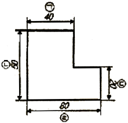
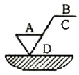
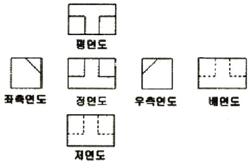
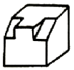
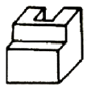
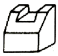
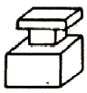
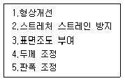

압연기능사 (2011-07-31 기출문제)
1과목: 금속재료일반
1. 비중이 알루미늄의 약 2/3 정도이고, 산이나 염류에는 침식되며, 비강도가 커서 항공우주용 재료에 많이 사용되는 금속은?
- Mg
- Cu
- Fe
- Au
(정답률: 89%)

2. 담금질한 강을 실온까지 냉각한 다음, 다시 계속하여 실온 이하의 마텐자이트 변태 종료 온도까지 냉각하여 잔류 오스테나이트를 마텐자이트로 변화시키는 열처리 방법은?
- 침탄법
- 심냉처리법
- 질화법
- 고주파 경화법
(정답률: 87%)
3. 다음 중 청동에대한 설명으로 옳은 것은?
- 청동은 Cu+Zn 의 합금이다.
- 알루미늄 청동은 Cu에 Al 을 12% 이하를 첨가한 합금이다.
- 인청동은 주석청동에 인을 합금 중에 8~15% 정도 남게 한 것이다.
- 망간청동은 Cu에 Mg 을 첨가한 합금으로 Cu 에대한 Mn 의 고용도는 약 20% 정도 이다.
(정답률: 59%)
4. 공업용 순철 중 탄소의 함량이 가장 적은 것은?
- 암코철
- 전해철
- 해면철
- 카보닐철
(정답률: 80%)
5. 온도변화에 따라 휘거나 그 변형을 구속하는 힘을 발생하여 온도감응소자 등에 이용되는 바이메탈은 재료의 어떤 특성을 이용하여 만든 것인가?
- 열팽창계수
- 전기저항
- 자성특성
- 경도지수
(정답률: 88%)
6. 압입자 지름이 10mm인 브리넬 경도 시험기로 강의 경도를 측정하기 위하여 3000kgf의 하중을 적용하였더니 압입자국의 깊이가 1mm 이었다면 브리넬 경도값(HB)은 약 얼마인가?
- 75.5
- 85.6
- 95.6
- 1⑤.6
(정답률: 60%)
7. Fe-C 평형 상태도에서 용융액으로부터 γ 고용체와 시멘타이트가 동시에 정출하는 공정물을 무엇이라 하는가?
- 펄라이트(pearlite)
- 마텐자이트(martensite)
- 오스테나이트(austenite)
- 레데뷰라이트(ledeburite)
(정답률: 64%)
8. 고강도 Al 합금으로 조성이 Al-Cu-Mg-Mn 인 합금은?
- 라우탈
- Y-합금
- 두랄루민
- 하이드로날륨
(정답률: 86%)
9. Ni에 Cu를 약 50~60% 정도 함유한 합금으로 열전대용 재료로 사용되는 것은?
- 퍼멀로이
- 인코넬
- 하스텔로이
- 콘스탄탄
(정답률: 79%)
10. 45% 탄소 강재를 약 880℃에서 수(水)중에서 담금질하면 무확산 변태를 일으키는 조직의 명칭은?
- 마텐자이트
- 펄라이트
- 오스테나이트
- 소르바이트
(정답률: 72%)
11. 가공용 황동의 대표적인 것으로 연신율이 비교적크고, 인장 강도가 매우 높아 판, 막대, 관, 선 등으로 널리 사용되는 것은?
- 동백
- 7:3 황동
- 6:5 황동
- 5:5 황동
(정답률: 85%)
12. 금속간 화합물의 특징을 설명한 것 중 옳은 것은?
- 어느 성분 금속보다 용융점이 낮다.
- 어느 성분 금속보다 경도가 낮다.
- 일반 화합물에 비하여 결합력이 약하다.
- Fe3C는 금속간 화합물에 해당되지 않는다.
(정답률: 73%)
13. A3 제도용지의 크기(세로 × 가로)는?
- 594 × 841mm
- 420 × 594mm
- 297 × 420mm
- 210 × 297mm
(정답률: 79%)
14. 그림에서 치수 기입 방법이 틀린 것은?

- ㉠
- ㉡
- ㉢
- ㉣
(정답률: 77%)
15. 지시 기호에서 가공방법을 표시하는 위치는?

- A
- B
- C
- D
(정답률: 84%)
2과목: 금속제도
16. 척도 2:1인 도면에서 실물 치수가 120mm인 제품을 도면에 나타내고자 할 때의 길이는 몇 mm 인가?
- 30
- 60
- 120
- 240
(정답률: 74%)
17. 아래 치수허용차를 옳게 나타낸 것은?
- 최대 허용치수와 대응하는 기준치수와의 대수차
- 최소 허용치수와 대응하는 기준치수와의 대수차
- 형체에 허용되는 최소 치수
- 치수와 대응하는 기준치수와의 대수차
(정답률: 76%)
18. 다음 투상도는 어느 입체도에 해당하는가?





(정답률: 95%)
19. 지름이 20mm 구(sphere)인 물체의 투상도에 치수기입이 옳은 것은?
- R20
- φ20
- SR20
- Sφ20
(정답률: 67%)
20. 정면도의 선택 방법에 대한 설명으로 틀린 것은?
- 물체의 특징을 가장 잘 나타내는 면
- 물체의 모양을 판단하기 쉬운 면
- 숨은선이 적게 나타나는 면
- 관련 투상도를 많이 도시해야 하는 면
(정답률: 72%)
21. 다음 재료기호 중 구상흑연주철을 표시하는 기호는?
- GC
- WMC
- GCD
- BMC
(정답률: 78%)
22. 수면이나 유면 등의 위치를 나타내는 선의 종류는?
- 파선
- 가는 실선
- 굵은 실선
- 1점 쇄선
(정답률: 76%)
23. 스퍼 기어의 도시 방법에 대한 설명으로 옳은 것은?
- 기어를 도시할 때 이끝원은 가는 실선으로 그린다.
- 기어를 도시할 때 피치원은 가는 1점 쇄선으로 그린다.
- 기어를 도시할 때 이뿌리원은 굵은 1덤 쇄선으로 그린다.
- 이뿌리원을 축에 직각 방향으로 단면 투상할 때는 가는 실선으로 그린다.
(정답률: 68%)
24. 다음 부품 중 길이 방향으로 절단하여 단면 도시할 수 있는 것은?
- 핀
- 너트
- 볼트
- 긴 파이프
(정답률: 80%)
25. 다음 중 소성가공 방법이 아닌 것은?
- 단조
- 주조
- 압연
- 프레스가공
(정답률: 84%)
26. 공형압연 설계시 고려할 사항이 아닌 것은?
- 열전달률
- 압연 토크
- 압연 하중
- 유효 롤 반지름
(정답률: 73%)
27. 입측판의 두께가 20mm, 출측판의 두께가 12mm, 압연 압력이 2500ton, 일 상수가 500ton/mm 일 때 롤 간격은 몇 mm 인가? (단, 기타 사항은 무시한다.)
- 5
- 7
- 9
- 11
(정답률: 49%)
28. 풀림로의 불활성 분위기 가스로 사용될 수 없는 것은?
- Ar
- O2
- Ne
- He
(정답률: 84%)
29. 냉연 박판의 제조공정 순서로 옳은 것은?
- 핫(hot)코일 -> 냉간압연 -> 풀림 -> 표면청정 -> 산세 -> 조질압연 -> 전단리코일
- 핫(hot)코일 -> 산세 -> 냉간압연 -> 표면청정 -> 풀림 -> 조질압연 -> 전단리코일
- 냉간압연 -> 산세 -> 핫(hot)코일 -> 표면청정 -> 풀림 -> 전단리코일 -> 조질압연
- 냉간압연 -> 산세 -> 표면청정 -> 핫(hot)코일 -> 풀림 -> 조질압연 -> 전단리코일
(정답률: 81%)
30. 연료의 착화온도가 가장 높은 것은?
- 수소
- 갈탄
- 목탄
- 역청탄
(정답률: 80%)
3과목: 압연기술
31. 산세에 대한 설명 중 틀린 것은?
- 온도가 높을수록 산세능력이 좋다.
- 황산이 염산보다 산세시간이 짧다.
- 산 농도가 높을수록 산세능력이 향상된다.
- 산세 전 강판의 표면에 있는 스케일층의 대부분은 FeO 층이다.
(정답률: 60%)
32. 연소가 일어나기 위한 조건이 아닌 것은?
- CO2 의 농도가 높을 것
- 착화점 이상일 것
- 산소가 풍부할 것
- 가연물질이 많을 것
(정답률: 74%)
33. 압연유 급유방식에서 순환방식의 특징이 아닌 것은?
- 폐유처리 설비는 작은 용량의 것이 가능하므로 비용이 적게 든다.
- 냉각효과 면에서 그 효율이 높고, 값이 저렴한 물을 사용할 수 있다.
- 급유된 압연유를 계속하여 순환, 사용하게 되므로 직접방식에 비하여 압연유의 비용이 적게 든다.
- 순환하여 사용하기 때문에 황화액에 철분, 그 밖의 이물질이 혼합되어 압연유의 성능을 저하시키므로 압연유 관리가 어렵다.
(정답률: 65%)
34. 압하량을 크게 하는 조건을 설명한 것 중 틀린 것은?
- 지름이 큰 롤을 사용한다.
- 압연재의 온도를 높여준다.
- 롤의 회전속도를 높인다.
- 압연재를 뒤에서 밀어준다.
(정답률: 57%)
35. 사상압연의 목적이 아닌 것은?
- 규정된 제품의 치수로 압연한다.
- 캠버(Camber)가 있는 형상으로 생산한다.
- 표면결함 없는 제품을 생산한다.
- 규정된 사상온도로 압연하여 재질특성을 만족시킨다.
(정답률: 80%)
36. 다음 [보기]에서 조질 압연의 주목적만을 옳게 고른 것은?

- 1, 2, 3
- 1, 3, 5
- 2, 3, 4
- 3, 4, 5
(정답률: 80%)
37. 전기강판의 전기적 및 자기적 성질을 설명한 것 중 틀린 것은?
- 투자율(Permeability)이 높을 것
- 자속밀도(Flux Density)가 높을 것
- 철손(Core Loss)이 높을 것
- 점적율(Lamination Factor)이 높을 것
(정답률: 71%)
38. 냉연제품의 결함 중 표면결함이 아닌 것은?
- 파이프(pipe)
- 스케일(scale)
- 빌드 업(build Up)
- 롤 마크(roll Mark)
(정답률: 56%)
39. 상ㆍ하 롤의 회전수가 같을 때 상부와 하부의 롤직경차이에 따른 소재의 변화를 설명한 것으로 옳은 것은?
- 상부 롤의 직경이 하부 롤의 직경보다 크면 소재는 하부 방향으로 횡이 발생한다.
- 상부 롤의 직경이 하부 롤의 직경보다 크면 소재는 상부 방향으로 횡이 발생한다.
- 상부 롤의 직경이 하부 롤의 직경보다 크면 소재는 우측 방향으로 횡이 발생한다.
- 상부 롤의 직경이 하부 롤의 직경보다 크면 소재는 좌측 방향으로 횡이 발생한다.
(정답률: 78%)
40. 압연에 의한 변화를 설명한 것 중 틀린 것은?
- 금속재료를 압연하면 결정격자의 일부가 결정면에 따라 이동해서 슬립을 일으킨다.
- 가공을 끝내는 온도, 즉 마무리 온도가 높을수록 결정립은 조대하게 된다.
- 슬립은 원자가 가장 밀집되어 있는 격자면에서 우선적으로 일어나며 압연가공을 하면 결정립은 압연방향으로 늘어난다.
- 열간가공에서는 압연 후 늘어난 결정립은 바로 회복되어 재결정 입자의 결정립이 미세화 되어 계속 압연할 수 있다.
(정답률: 60%)
41. 산세 작업시 과산세를 방지할 목적으로 투입하는 것은?
- 온수
- 황산(H2SO4)
- 염산(HCl)
- 인히비터(inhibitor)
(정답률: 81%)
42. 사상압연기의 제어기기 중 압연재의 형상제어와 관계가 가장 먼 것은?
- 롤 시프트(roll shift)
- ORG(On Line Roll Grinder)
- 페어 크로스(pair cross)
- 롤 벤더(roll bender)
(정답률: 79%)
43. 열간압연 공정에서 제품에 스케일이 발생되는 내용과 관계가 없는 것은?
- 디스케일링이 불량할 때
- Roll 표면의 거침이 있을 때
- Roll Crown 이 적정할 때
- 가열로의 추출온도가 높을 때
(정답률: 75%)
44. 냉간압연작업을 할 때 냉간압연유의 역할을 설명한 것 중 틀린 것은?
- 압연재의 표면성상을 향상시킨다.
- 부하가 증가되어 롤의 마모를 감소시킨다.
- 고속화를 가능하게 하여 압연능률을 향상시킨다.
- 압하량을 크게 하여 압연재를 효과적으로 얇게 한다.
(정답률: 55%)
45. 압연 재료가 롤에 접촉하고 있는 부분 중 중립점이 갖는 특징이 아닌 것은?
- 접촉 부분의 중간점이다.
- 재료의 슬립(slip)이 없는 점이다.
- 압연력이 최대로 작용하는 점이다.
- 압연재의 속도와 롤의 주속이 같은 점이다.
(정답률: 47%)
4과목: 압연설비
46. 슬래브 15000톤을 처리하여 코일 13500톤을 생산했을 때 압연 실수율은 몇 %인가? (단, 재열재는 500톤이 발생하였고, 재열재는 소재량에 포함시키지 않는다.)
- 90.1%
- 93.1%
- 95.4%
- 98.4%
(정답률: 61%)
47. 열간압연에서 소재의 진행에 따른 소재를 검출하여 각종설비가 자동으로 작동되게 하는데 많이 사용되는 센서는?
- H.M.D(Hot Metal Detecter)
- 바이메탈(bi-metal)
- 솔레노이드(solenoid)
- 파로메터(pyrometer)
(정답률: 78%)
48. 공형에 대한 설명 중 틀린 것은?
- 개방공형은 압연할 때 재료가 공형 간극으로 흘러 나가는 결점이 있다.
- 개방공형은 성형 압연 전의 조압연 단계에서 사용된다.
- 폐쇄공형에서는 재료의 모서리성형이 쉬워 형강의 압연에 사용한다.
- 폐쇄공형은 1쌍의 롤에 똑같은 공형이 반씩 패어있다.
(정답률: 70%)
49. 압연 롤을 회전시키는 모멘트 75kgㆍm, 롤의 회전수 45rpm으로 회전시킬 때 압연 효율을 50%로 하였을 때 필요한 압연 마력은 약 몇 마력인가?
- 1 마력
- 3 마력
- 6 마력
- 9 마력
(정답률: 40%)
50. 후판압연작업에서 평탄도 제어 방법 중 롤 및 압연상황에 대응하여 압연하중에 의한 롤의 휘어지는 반대방향으로 롤이 휘어지게 하여 압연판 형상을 좋게하는 장치는?
- 롤 스탠드(roll stand)
- 롤 교체 (roll change)
- 롤 크라운 (roll crown)
- 롤 밴더 (roll bender)
(정답률: 65%)
51. 수평롤과 수직롤로 조합되어 1회의 공정으로 상ㆍ하 압연과 동시에 측면압연도 할 수 있는 압연기로 I형강, H형강 등의 압연에 이용되는 압연기는?
- 2단 압연기
- 스테켈식 압연기
- 플래너터리 압연기
- 유니버셜 압연기
(정답률: 83%)
52. 유압 방식의 압하 설비 특징을 설명한 것 중 틀린 것은?
- 압하의 적응성이 좋다.
- 최적 압하 속도를 쉽게 얻을 수 있다.
- 전동식에 비해 관성이 커서 효율적이다.
- 압연 사고에 의한 과대 부하의 방지가 가능하다.
(정답률: 63%)
53. 국부의 혈액순환 이상으로 몸이 퉁퉁 부어오르는 상태의 상해는?
- 동상
- 자상
- 부종
- 골절
(정답률: 90%)
54. 사상압연기의 Stand 와 Stand 사이에 설치되어 있지 않는 것은?
- 냉각수 스프레이
- 루퍼(Looper)
- 에저(Edger)
- 사이드 가이드(Side guide)
(정답률: 48%)
55. 다음 중 교육방법의 4단계를 올바르게 나열한 것은?
- 제시 -> 적용 -> 도입 -> 확인
- 제시 -> 확인 -> 적용 -> 도입
- 도입 -> 제시 -> 적용 -> 확인
- 도입 -> 제시 -> 확인 -> 적용
(정답률: 60%)
56. 압연속도를 결정하는 주요 요소가 아닌 것은?
- 압연재의 변형저항
- 압연재의 색깔
- 압연기의 형식
- 전동기의 회전속도
(정답률: 91%)
57. 급유 개소에 기름을 분무상태로 품어 윤활에 필요한 최소한의 유막형성을 유지할 수 있는 윤활장치는?
- 등유 급유장치
- 그리스 급유장치
- 오일 미스트 급유장치
- 유막베어링 급유장치
(정답률: 72%)
58. 스트립이 산세조에서 정지하지 않고 연속 산세 되도록 1~3 개분의 코일을 저장하는 설비는?
- 플레쉬 트리머(flash trimmer)
- 스티처(stitcher)
- 루핑 피트(looping pit)
- 언코일러(uncoiler)
(정답률: 56%)
59. 전동기 동력을 상ㆍ하 롤에 각각 분배하여 주는 장치는?
- 피니언
- 가이드
- 스핀들
- 틸팅 테이블
(정답률: 74%)
60. 다음 중 내화 벽돌의 재료로 사용되지 않는 것은?
- 석회석질
- 마그네사이트질
- 돌로마이트질
- 포오스터라이트질
(정답률: 71%)